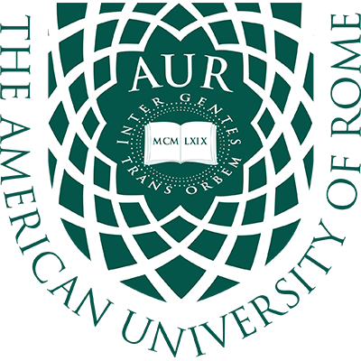
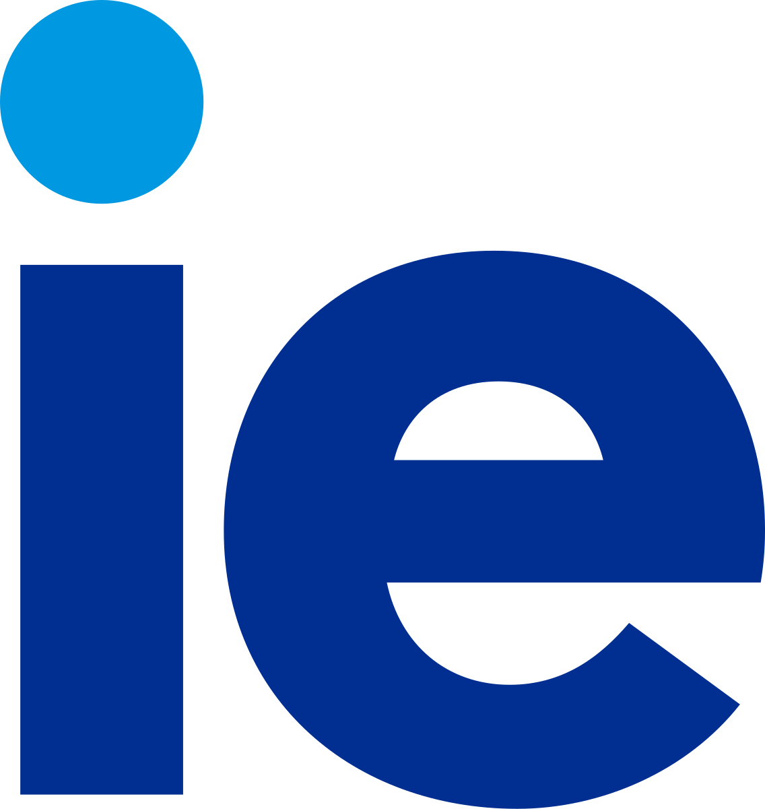

Sobre mim
Sou Jéssica Mendes — estudante de Ciência da Computação, com visão híbrida entre tecnologia, projetos e design. Busco um estágio 100% remoto, que promova crescimento, estabilidade e aprendizado constante.
Meus interesses incluem front-end, dados, business intelligence e gerenciamento de projetos. Minhas principais stacks são Python, HTML, CSS, Javascript, CSS e ferramentas como Figma, Trello, PowerBI e Looker Studio.
Tenho experiência em trabalho remoto, atuando durante 7 meses com empresas distintas nesta modalidade. Fui Desenvolvedora Full-stack na seerdot, criando protótipos para o produto final via Figma, e fui Desenvolvedora Júnior na Tekoporã, criando o novo site da empresa.
Programas Alumni


Fui aprovada em cinco universidades internacionais em diferentes países e modelos educacionais, somando +1 milhão de reais em bolsas de estudos. Essa experiência ampliou minha visão global, diversidade cultural e possibilidades dentro da área de tecnologia e projetos.